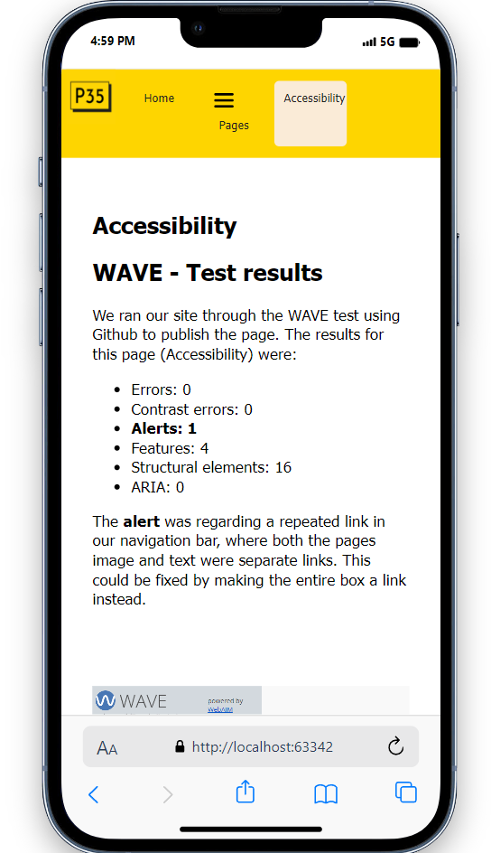

Accessibility
WAVE - Test results
We ran our site through the WAVE test using Github to publish the page. The results for this page (Accessibility) were:
- Errors: 0
- Contrast errors: 0
- Alerts: 1
- Features: 4
- Structural elements: 16
- ARIA: 0
The alert was regarding a repeated link in our navigation bar, where both the pages image and text were separate links. This could be fixed by making the entire box a link instead.
Results from WAVE test / Photo: Screenshot
Scalability - Screen/Phone
We used the Mobile Simulator extension in Chrome to check that the page would be readable on smaller devices.

Phone view / Photo: Screenshot